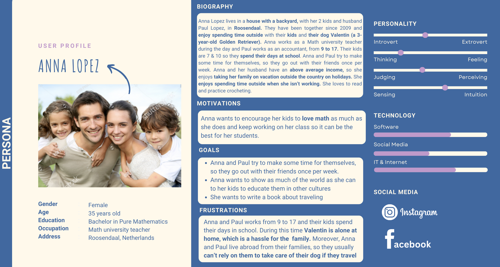
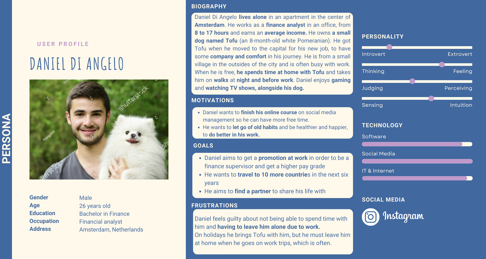
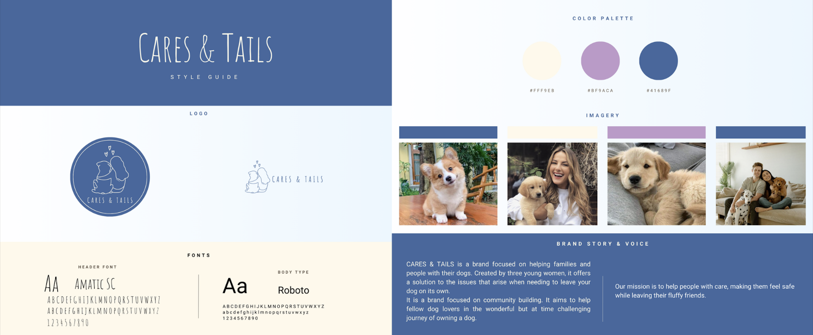

General Information
This branded website is publicly available at https://caresandtails.github.io/caresandtails/
This website was created by:
- Justine Serrano (ID: 220599)
- Bárbara Costa (ID: 211708)
- Adriana Urrutia (ID: 222079)
Content
Please clarify here the match between students and pieces of content. Make sure that you provide a link to the correct page within the website
| # | Student ID | Value * | Name and link of content |
|---|---|---|---|
| 1. | 220599 + 211708 + 222079 | Home | Home |
| 2. | 220599 + 211708 + 222079 | About us | About us |
| 3. | 220599 + 211708 + 222079 | Services | Services |
| 4. | 220599 + 211708 + 222079 | Forum | Forum |
| 5. | 220599 + 211708 + 222079 | Corporate | Corporate |
* As this was a group of three, all team members collaborated and worked together in the making of the whole website. Due to good workflow among the group this was possible and ended up with good results.
Vision
In a world where loneliness has never been as prominent as now, we believe true connections can help fight it. Only then can we move to a world where everyone feels like they have a place.
Values
- Companionship
- Non-judgemental
- Empathy
- Authenticity
Persona 1
Persona 2
Production
Style Guide
Design Elements
- #41689F As our brand is based on dogs, we wanted to appeal to their visibility spectrum, which varies from blue to yellow. Therefore, we wanted blue, which is one of the main colors they see, to be one of the main colors of our brand.
- #FFF9EB Our brand looks to showcase a clean, comfortable look. Due to this we wanted to have a soft color that would embody our vision. We choose a biege color to contrast our blue, making a fun combination between them.
- #BF9ACA With our two main colors being blue and biege, we wanted to add a speck of color in our brand and website. We chose purple for this as it represents creativity and femininity, which are two of the direct traits from the creators.
Font choices
Amatic SC
We chose this font because we wanted to give a sense of friendliness and coziness. We saw the font and felt the font transmited a feeling of warmness and home that we thought really stuck with our brand and what we wanted to convey.The font was also simple and easy to read while still looking as if it was handwritten, which we thought was a nice touch.
Roboto
We chose this font because of its simplicity. As this font is from the same family as San-Serif it is both easy to read and comprehend on screens by people. Due to its neutral and minimalistic, yet classy, look it reaches everyone, making it easy to read even for people with low vision and dislexia. We wanted our website to be accessible, inclusive, and easy to use.
Website justifications
General Aspects: For the general aspects of our website, we decided to maintain a few elements all throughout our website. For example, every added element has rounded borders to maintain a consistent look throughout the whole website. We also stuck with both our main colors, blue and beige to make contrast between them, and our two fonts all throughout. We mixed the typography and color and made them our chosen colors in every text area, so it always looked the same. We also added our purple color to every button once the user hovers, to add color to the site and make it clear for the users when they are really clicking or on something. Our website is also fully responsive across different devices, adapting to any screen size our users may have.
Both our header and footer are maintained without alteration across the whole website.
Header: The header contains the second version of our logo, which is a simple and minimalized version made with the purpose of making it easy to see and recognize on a website screen. We placed the logo on the left side so that it would stand out from the other section titles and interactive so that when it is clicked, it takes the user back to the home page, no matter in what section of the website the user is. The other titles in the header to the right, will redirect the user correspondingly to the section they clicked on. When the user is accessing a certain section, it will turn purple informing them on which page they are currently on and differentiating it from the other titles.
Footer: In the footer, we decided that it was important for our users to have a quick way to find us on social media; therefore, we added icons of the logos of both Instagram and Facebook. Once clicked, the hyperlink associated with each icon redirects the users to our social media accounts, making things simple and fast for them, enhancing their user experience with our website. We also added a small text at the bottom left corner that includes the name of our brand, Cares & Tails, and its creation year, as we have seen on many other websites, to give a professional look.
Home Page: For the “Home” page, we wanted to keep it simple so it would not distract the users from the main service of our website. We first chose to add a blurred picture inside a container as the background so that it would not distract the users from the informational text. We chose a dog picture that we believe aligns with our vision and brand, as the dog shows the loneliness that we are trying to erase. Moreover, we decided to add a button to direct users to our main service without the need to move around the website or get lost, making it interactive and user-friendly. Likewise, with our text, we wanted to explain in a short yet attractive way the purpose of our website and how they can book our service. We also wanted to make sure to update them about our upcoming feature, so they could get all the information on one page.
About us page: We start the “About us” page with a container, that includes “Who is Cares & Tails” as a brand and “Why Cares & Tails” where we expose our vision. These two texts are written horizontally beside each other. This makes it easier for the user to read and focus on each topic one at a time, while giving a clean and organized look to the website. We also decided to make the container blue to avoid it merging with the header. Moreover, with blue being our main color, it shows contrast with the beige below and above, making each section catch the user's eye. Under this, we showcase our main values as a small list making a uniform and aligned structure that stands out. Consequently, in the “Meet the Team” section we made use of display cards, to showcase our members in an organized and clean way. Here we implemented round photos, following our rounded border's theme, and a small text that introduces to the user the faces behind the brand. Finally, at the bottom of the page the user encounters a “Contact us” form. We decided to add it at the end so visitors can easily find a way to reach out to us if they have questions or concerns after reading all the content above.
Services page: In the “Services” page, we placed a “Book with Us” booking container right at the beginning of our page strategically positioned for quick access to booking a dogsitter. The page background is set to our blue making contrast with the containers that have our beige, highlighting the key parts. For an easier process and to provide a more user-friendly and effective experience, we made sure to create specific boxes that made the booking process as easy as possible. We included boxes for things such as the user's area, number of dogs, and a calendar to place the start and end date of their booking. In addition, under this we can find the best rated sitters' section which we divided into four rows for easy user navigation. These rows adapt and respond to small screens showing the sitters in one single row when scrolling. Within each card element we can first find a picture of each dog-sitter to give users a visual impression. Beneath the image, the user will find a concise description of the sitter's experience, their reviews, response time, and their price range, along with a “Learn More” button. The button is blue but when hovered turns purple following our standard theme and offering an intuitive indication for users to interact with the button.
Forum page: The “Forum” page is not the final version due to the complexity that is required to make an actual forum page like we had ideated, as this would be an area for users to interact with each other, discuss, help, and answer any questions. To help our website still create anticipation, we added a countdown timer indicating when the forum page would be launched to the public. Besides that, blue was used again in the background, and we decided to include our second logo, which is the face of our social media, to give a visual representation of the forum's aesthetics. Aside from this, we also included a brief description of what the forum page would consist of to give some insight to the users on what they can expect in terms of the upcoming content.
Credits
Chat GPT prompts
- 1. Home page: "Can you give me the code for a home page that has a background image and some text in the middle with a book now button"
- 2. About us: "Can you generate a html code for a meet the team section of 3 members with round corners please "Could you help me with a html contact us section where the buttons are under each other"
- 3. Services: "Can you make a simple booking container with hmtl and css"
- 4. Corporate: "Can you make a 7 by 3 square with images that when clicked redirect you to a link"
- 1. Forum: https://www.w3schools.com/howto/howto_js_countdown.asp
- Photo by Pew Nguyen from Pexels: Link
- Photo by Yaroslav Shuraev from Pexels: Link
- Photo by Anna Bondarenko from Pexels: Link
- Photo by Chikinbun from Pexels: Link
- Link
- Photo by Nikita Nikitin from Pexels: Link
- Photo by Hamza Uran from Pexels: Link
- Link
- Photo by Clau Oliveros from Pexels: Link
- Foto de Ksenia Chernaya: Link
- Foto de Samson Katt: Link
- Foto de Rachel Claire de Pexels: Link
- Foto de Spencer Gurley Films de Pexels: Link
- Foto de Mohsin Mirza: Link
- Foto de Lauren Whitaker: Link
- Foto de SHVETS production: Link
- Foto de Sam Lion: Link
- Link
- Link
External website
External images
Testing Report
Test protocol
Each one of us made 2 tests (6 tests in total). Different devices were used in different tests to also test the responsiveness of our website.
Tester 1
Prototype tester: Tommaso, 25 years old. Owns dog and lives alone.
Research Question: Is our website Cares & Tails effective in the booking of a service of dog sitter?
Goals: Find the right path to book a sitter for their dogs.
Context: The tester is going on vacations and doesn't have anyone to leave their dog with. Therefore, they need to book a sitter for those days, so their dog does not stay alone at home.
Tester 2
Prototype tester: Ana Paula Salazar, 25 years old. Owns 1 dog and lives with her partner.
Research Question: Is our website Cares & Tails effective in the booking of a service of dog sitter?
Goals: Find the right path to book a sitter for their dogs.
Context: The tester is going on vacations and doesn't have anyone to leave their dog with. Therefore, they need to book a sitter for those days, so their dog does not stay alone at home.
Tester 3
Prototype tester: Patricia Bruno, 40 years old. Owns 2 dogs and lives with her partner.
Research Question: Is our website Cares & Tails effective in the booking of a service of dog sitter?
Goals: Find the right path to book a sitter for their dogs.
Context: The tester is going on vacations and doesn't have anyone to leave their dog with. Therefore, they need to book a sitter for those days, so their dog does not stay alone at home.
Tester 4
Prototype tester: Daniel Martins, 42 years old. Owns 2 dogs and lives with his partner.
Research Question: Is our website Cares & Tails effective in the booking of a service of dog sitter?
Goals: Find the right path to book a sitter for their dogs.
Context:The tester is going on vacations and doesn't have anyone to leave their dog with. Therefore, they need to book a sitter for those days, so their dog does not stay alone at home.
Tester 5
Prototype tester: Lucia Cardenes Rodriguez, 25 years old. Owns 1 dog and lives with family.
Research Question: Is our website Cares & Tails effective in the booking of a service of dog sitter?
Goals: Find the right path to book a sitter for their dogs.
Context: The tester is going on vacations and doesn't have anyone to leave their dog with. Therefore, they need to book a sitter for those days, so their dog does not stay alone at home.
Tester 6
Prototype tester: Virgina Arcas, 47 years old. Owns 2 dogs and lives with family.
Research Question: Is our website Cares & Tails effective in the booking of a service of dog sitter?
Goals: Find the right path to book a sitter for their dogs.
Context: The tester is going on vacations and doesn't have anyone to leave their dog with. Therefore, they need to book a sitter for those days, so their dog does not stay alone at home.
Test findings
Home Page and Presentation:
- Nice and appealing home page.
- Clear and organized display of sitters, including names and reviews.
- Liked the overall presentation and information display.
- Easy to navigate with intuitive sections and buttons.
Booking Process:
- Booking part is very intuitive and easy to use.
- Booking process is clear, fast, and straightforward.
- Appreciation for the simplicity and efficiency of the booking system.
Trust and Information:
- Importance of seeing reviews and sitter experience for building trust.
- Desire for full sitter reviews and tenure with the brand.
- Liked seeing pictures of sitters along with their information.
Efficiency and Usefulness:
- Generally high ratings for efficiency (8.5/10 to 10/10).
- Solves the problem effectively (e.g., finding dog care while traveling).
- Service viewed as useful and interesting, addressing a genuine need.
User-Friendliness:
- Positive feedback on simplicity, user-friendliness, and ease of navigation.
- Enjoyment of having multiple sitter options and clear information.
Price Points:
- Price expectations range from €20 to €75 per day, with variability based on the service and sitter.
Design and Visuals:
- Positive reception towards color scheme, fonts, and overall aesthetic.
- Appreciation for clear, informative visuals (e.g., team profiles, dog images).
Suggestions for Improvement List:
Additional Features:
- Desire for continuous reports on dog's well-being.
- Preference for direct contact with sitters beyond the website.
- Request for more detailed sitter ratings (e.g., star ratings).
- Interest in a map displaying areas and prices similar to other booking platforms.
Marketing
Context of campaign and promotional activities
Cares & Tails is a brand focused on providing a helping hand for dog owners who face the problem of not having where to leave their dog when they are away for work, vacations or are just generally busy. The brand's message is to ease the worries dog owners may face and help them feel like they found a place they trust for their pet friends. For our promotional campaign and our brand, we decided to focus on two target audiences. Our brand is targeted at two sub-groups which are described below. We decided to go with two target groups because we thought this problem is a common thing that different people experience. Not all dog owners have the same characteristics, such as living situation, income, age, etc. and therefore we chose two of the possible target groups that we believe experience this problem more recurrently than others.
Sub target group 1: Families
- Age: 30-44
- Personality: family driven, traveling, social, outdoor liker, both parents work
- People with younger kids
- Europe
Sub target group 2: People living alone
- Age: 25-44
- Personality: afraid of loneliness, safety, seeks comfort, work addicts, friendly, stay-at-home person.
- Heavy workers (long office hours, work trips)
- Europe
By having those two groups we decided to go for two social media platforms in which to promote and execute our campaign. We decided to go for the platforms that were mentioned in our interviews and in our research, where we saw that the most used by our target groups according to statistics are Instagram and Facebook. Research showed that 51.1% of Facebook users and 46.6% of Instagram users are aged between 25 and 44. Thanks to these percentages we decided to focus on both social media for a bigger reach to our audience.
We chose Instagram with its innovative visual features, allowing our company to show different sides with diverse types of content like reels and photo posts in an engaging way. We then chose Facebook, as it is a much more family-oriented and social platform, with its broad user base and groups features it allowed our brand to engage directly with families, sharing valuable content and creating a feeling of community. On our objectives, we expected a higher number of followers on Instagram as we have personally seen that even bigger brands don’t get as many interactions or followers on Facebook as they do on Instagram, therefore lowering our objective expectations with this platform.
For our actual campaign post we planned on first posting content related to our brand, posting our logo, explaining the colors, our vision and mission. Besides this, we also wanted to make some informational posts about dogs in general such as tips and fun facts about dogs to interact more with our audiences, as well as using appealing captions with emojis and fun word play. Aside from our informatically and more “serious” posts, we also tried a comedic approach on video format to really get our targeted groups to relate with our posts and have a good time while scrolling through our page. All of these things contributed to our campaign and to our audiences getting to know better who Cares & Tails is, what we do, get information about dog-related topics, all while at the same time getting entertained.
Furthermore, our objective was to reach at least 75 Instagram followers and 15 Facebook followers by April 5, 2024. We wanted the dog owners in our audience to have faith in our company to look after their pets, ensuring the dogs receive companionship while their owners are away. It was critical that our target audience stays involved with our brand's progress and social media presence. Thus, we strived for tangible engagements, such as receiving at least 5 likes on each post from our followers.
Learning Points
General point: For our posts we decided to constantly change and try many different aspects every week to really see what worked and what didn’t and later on reflect on that. Because of this, we would analyze how our week went and change things for the next, that way we really saw what was effective. Once we saw things worked, we would put it to the real test and try it for 2 weeks and so on.
Instagram:
Week 1 of Posting (26/02 - 03/03)
What we did: We made our first introductory post at 16:00h on Sunday, after seeing the Instagram analytics of one of the members of the group. We saw there was a high number of users active at this time and decided to try it out for our first post as we did not have any sources at the moment. We also decided to share our Instagram account (@caresandtails) with friends. In our post we implemented random hashtags we thought related to our brand that we came up in the moment.
What worked: After posting we got a total of:
- 20 likes
- Reached 21 accounts
- Engaged with 8 accounts coming from our followers.
What we changed: After this week, we changed our bio to gain more engagement and give the public more knowledge of our brand. We also researched in both Chat GPT and Google the best hashtags for both Instagram and Facebook for dog businesses to implement them in our posts. In addition, we decided to add #explorepage to increase our audience reach and more posting days after online research. We also saw that posting too much, meaning various times in one day, could actually affect negatively the growth of an account. Because of this we decided to stick to 3 posts per week, leaving one break day in between. We also checked what times worked best and agreed on trying new content formats, as well as to start reposting our posts on our stories.
Week 2 of Posting (04/03 - 10/03)
What we did: This week, we decided to try things out and post on Wednesday at 18:00h, Friday at 13:00, to attempt an earlier time after more research, and on Sunday at 14:00h, making it now two hours earlier than last time. We agreed that for these posts we were going to place the new hashtags we had found, try a new time for each day and new humorous video formats to see if there was an increase in the reach and engagement. We also decided to start reposting all our posts and reels on our stories to see if we would reach our followers more, as users tend to interact and see stories more than their feed. Furthermore, because of this we also decided to promote our Facebook on our Instagram to see if we could bring our followers from one platform to the other.
What worked: At the end of the week, we reached a total of:
- 42 accounts with our account in general
-14 from non-followers (increase of 16,6%)
- Engaged with 16 accounts total, 1 being a non-follower
Our post on the 06/03 got:
- 19 likes
- Reached 56 accounts, 19 non-followers
Our second post on the 08/03 received:
- 19 likes
- Reached 47 accounts, 14 non-followers
Our video from the 10/03 got:
- 113 views
- 13 likes
- Reached by 47 accounts, 12 being non-followers
Compared to the previous week there was a general increase in all parameters which makes us believe that our implementations from the previous week generally worked.
What we changed: After seeing how the week went, we decided to change the posting times again after another research to see if we could achieve a higher increase in our engagement. We added new hashtags, decided to implement the use of AI in our caption making, and modified our post layout.
Week 3 of Posting (11/03 - 17/03)
What we did: This week, we decided to change the posting time throughout our posts, now making it at 11:00 rather than at 18:00h on Wednesday, 14:00 rather than 13:00 on Friday and at 18:00h on Sunday rather than at 14:00h. We agreed to switch to these times after conducting more research to see if there would be an increase in our engagement. We also decided to add more relevant hashtags to each post to see if the reach expanded after finding the best hashtags to use in posts. On our post on the 17th, we made the decision to try posting only one post rather than multiple (collections) to see if people would engage more with it, as they don’t need to scroll the get the information. We also made use of Chat GPT for our captions but changed its wording to make it more natural and for it to fit our style.
What worked: This week we got a total reach of:
- 178 accounts
- 139 non-followers (increase of 892%)
- Total engagement of 21 accounts, 2 non-followers (increase of 100%)
Our post from the 13/03 got:
- 18 likes
- 1 comment
- 39 accounts reached, 7 non-followers
The reel from the 15/03 got:
- 15 likes
- 2 comments
- 241 views
- Reached 169 accounts, 135 non-followers
The post of the 17/03 got:
- 12 likes
- Reached 38 accounts, 8 non-followers
When we compare our results to previous weeks, we can see that the videos reach the most accounts rather than the regular posts, which leads us to believe that introducing videos to our weekly posts is working and giving our account more reach.
What we changed: After the change in the posting schedule of last week we saw an increase in the reach of the accounts and posts, so we decided to try one more week with the same posting time to see if our reach keeps increasing. We also agreed to add the category “pet sitter” to our account to see if we reached more accounts and decided to focus more on videos formats for our weekly posts.
Week 4 of Posting (18/03 - 24/03)
What we did: For this week, the posting schedule was kept the same as the previous week. Here we decided to publish “reel - post - reel” as opposed to the other weeks where it was only one reel and the rest regular posts.
What worked: This week we got a total reach of:
- 584 accounts
- 544 non-followers (increase of 291%)
- Total engagement of 33 accounts, 17 non-followers (increase of 750%)
On our video post on the 20/03 got:
-21 likes
- 404 views
- 321 accounts reache, 285 non-followers
Our post on the 22/03 got:
- 14 likes
- 33 accounts reached 4 non-followers
On the 24/03 our video got:
- 76 likes
- 1,212 views
- 1,085 accounts reached, 1,054 non-followers
After seeing our results, we clearly understood how the posting of more reels increased greatly our reach by 366 accounts. We can see that the times we are posting are working well as our videos and profile get a high number of views.
What we changed: Due to the lack of time left for the finalization of the project and our total number of posts being less than 15, we were suggested to increase the number of weekly posts to reach a total of at least 20 posts. To accomplish this, we decided to increase the number of posts going from 3 posts a week to multiple posts per day. For this, we also had to introduce new time schedules for our new posting days. These changes were made to be able to do more research, analyze our progress, and further understand what works and what doesn't, as this is a learning process. As this decision came later in the day, we had to change our posting time on Thursday to a random time, as our usual time had already passed. This also helps us to see what the reaction is in terms of interactions when posting at random times rather than a strict schedule. Following our other results, we decided to post even more reels in the week rather than focusing on normal posts. This was to see if we get more overall interactions after seeing that most interactions come from reels rather than posts and to see the effects of multiple posts on one day. We also agreed to test the reaction of posting a video with a random visual that didn’t deal with dogs and try to add a song to one of our normal posts after seeing that it was commonly used by other creators.
Week 5 of Posting (25/03 - 31/03)
What we did: This week we posted on Wednesday, Thursday, Friday, Saturday for the first time, and Sunday. We also decided to post on Friday 29, two reels rather than “post and reel”, to see how it could affect the reach of both videos and if it affected its views. We also agreed to post on Sunday late at night (1:00am) and post a video that did not include dogs but rather was a topic far different from what we are used to posting. That day we also tried and posted our image with a song to see if there were any extra interactions.
What worked: This week we got a total reach of:
- 4,505 accounts
- 4,443 non-followers (increase of 716%)
- Total engagement of 407 accounts, 386 non-followers (increase of 2,170%)
On Wednesday 27/03 we got:
- 9 likes
- Reached 22 accounts, 1 non-followers
On Thursday 28/03, our video got:
- 85 likes
- 801 views
- Reached 710 accounts, 685 non-followers
On Friday 29/03, our first video got:
- 68 likes
- 1355 views
- 2 saves
- Reached 1,011 accounts, 985 non-followers
Our second video got:
- 88 likes
- 1219 views
- 1 save
- 1,107 accounts reached, 1,086 non-followers
On Saturday 30/03, our video got:
- 118 likes
- 1486 views
- 1 save
- Reach of 1,164, of which 1,140 were non-followers
Lastly, on Sunday 31/03 our video got:
- 10 likes
- 201 views
- 1 save
- 155 accounts reached, 133 non-followers
Our post of Sunday got:
- 12 likes
- 1 comment
- 26 accounts reached, 4 non-followers
After this trial week of multiple posts, we got a huge increase of 3,921 accounts. This confirmed our belief that videos bring the most engagement, reach, and are the preferred content of our target audience. We can see how the videos do best as they also appear on the feed of non-followers, giving the reels a bigger audience. We also discovered that posting two reels in one day does not affect its success or engagement.
What we changed: As mentioned before, these last weeks are focused on trying new things. For the next week, we are trying out a collaboration post with another account.
Week 6 of Posting (01/04 - 07/04)
What we did: For this week, we posted our last 4 posts, 1 on Monday, 2 on Tuesday, and lastly 1 post on Wednesday. We stuck to our past strategies as we saw they worked effectively, we did add a collaboration post with another account to see if we could help each other and expose our content to a bigger and different audience. We collaborated with famvan.nl and posted it on Tuesday followed by a reel. This week we focused only on reels aside from the collaborative post.
What worked: For this short week, we got a total reach of:
- 1,033 accounts
- 1,000 non-followers
- Total engagement of 79 accounts, 69 non-followers
On Monday 01/04 we got on our reel:
- 17 likes
- 350 views
- 293 accounts reached, 269 non-followers
On Tuesday 02/04 we got on our collaborative post:
- 7 likes
- 31 accounts reached, 18 non-followers
On our reel:
- 5 likes
- 37 views
- 21 accounts reached, 1 non-follower
On Wednesday 03/04 we got:
- 44 likes
- 546 views
- 459 accounts reached, 443 non-followers
Final learning points: After 6 weeks of posting, we learned a few things about what worked and what did not. We realized the posts that get more interactions are in fact reels. These were the main sources of our engagement in our profile. We also saw that general image posts don’t reach many people outside of our followers. Our profile reached 6,318 accounts, of which 6,250 are non-followers, and we got 7,574 impressions to this to date. We realized that most of our interactions came from non-followers, which lead us to conclude that this is caused by our reels appearing in users explore page, creating new opportunities for gaining new followers. Even though we didn’t manage to reach our expected number of followers, which was 75, we managed to get 54 followers, and our reach and impressions were much higher than we ever expected. Our general expectations for this platform were higher as we know a lot of people interact with it, as is proven by the number of followers obtained. Our video posts kept doing very well day after day which encouraged and motivated us to keep posting them. Moreover, we realized that posting reels with random visuals that do not relate to our topic do not do well. Even though we only tested it once, we can assume that changing from the usual content may not do well the first time. We also deduced that as our brand is not as known, people didn’t relate much to our post as it talked about Cares & Tails rather than dogs in general, which could also be a reason why the reel didn’t reach a big audience. On the other hand, we did see that the hashtags we were using brought people to our posts from the Instagram analytics, which means we were using the right ones. All of these helped us conclude that the improvements and changes in our posting and planning were very effective and helped our account grow.
Facebook:
Week 1 of Posting (26/02 - 03/03)
What we did: In the beginning we decided to post exactly on the same days and times as we were posting on Instagram as well as the same content. Since it was the start of the page, we didn't have anything to compare to or know what would work so there was nothing better than trying it out. We also had the impression that the content we were making was appropriate and appealing for both platforms.
What worked: After posting we had:
On Sunday 03/03 we got:
- 4 likes
- 8 accounts were reached
- 14 impressions
Already in the first week, we can observe a reduction in engagement when compared to Instagram; both first postings in each social media account show a difference in engagement, with Facebook receiving 16 fewer likes than Instagram. Nonetheless, we thought that by delivering the same content on both platforms, our Instagram followers would eventually migrate to Facebook.
What we changed: After this week, we researched in both Chat GPT and Google the best hashtags for Facebook for dog businesses to implement them in our posts. In addition, we decided to add #explorepage to increase our audience reach and more posting days after online research. We researched what times worked best for the platform and agreed on trying new content formats.
Week 2 of Posting (04/03 - 10/03)
What we did: This week we kept posting the same content we did on Instagram at the same times, but we changed the hashtags to the ones we found working on Facebook. We wanted to really see if the same content that worked on Instagram worked on Facebook, as we were able to connect our accounts. We also decided to promote our Facebook on our Instagram to see if we could bring our followers from one platform to the other and vice-versa.
What worked: After posting:
On Wednesday 06/03 we got:
- 5 reactions
- 12 accounts were reached
- 20 impressions
On Friday 08/03 we got:
- 3 reactions
- 6 accounts were reached
- 12 impressions
On Sunday 10/03 we got:
- 3 reactions
- 7 accounts were reached
- 48 views
Comparing week 1 to this week we can see that the numbers of the analytics basically remained the same. Considering the changes made from one week to the other, we can assume that those weren’t effective on Facebook in making our account increase its numbers.
What we changed: After this week we decided to change the posting times again after another research to see if we could achieve a higher increase in our engagement. We added new hashtags and decided to implement the use of AI in our caption making.
Week 3 of Posting (11/03 - 17/03)
What we did: For this week, we decided to change the posting times as we did on Instagram after researching to see if our reach would increase. We posted the same content as on Instagram.
What worked:
On Wednesday 13/03 we got:
- 1 reaction
- 3 accounts were reached
- 6 impressions
On Friday 15/03 we got:
- 0 reactions
- 4 accounts were reached
- 28 views
On Sunday 17/03 we got:
- 1 reaction
- 4 accounts were reached
- 10 impressions
Once again, comparing Week 3 with Week 2 we can see that there isn't a big variation in the numbers but still it is noticeable a slight decrease of the 3 parameters in general, which is an indicator that our modifications did not lead to a more positive outcome.
What we changed: After seeing a lack of engagement and reach on our posts on Facebook we decided to change our content from Instagram to see if it would increase. We researched the type of content users enjoyed and helped connect with audiences on Facebook, which we discovered were stories and branded graphics.
Week 4 of Posting (18/03 - 24/03)
What we did: This week our content changed from the one we posted on Instagram. We decided to go for touching stories regarding well-known dogs, that people could connect with. We posted two dog stories followed by a written story, a visual graphic, and a link to more information. We decided to post the actual content in the description rather than placing it in the visuals as we usually do. We did this to give more in-depth information and to present simpler and more attractive graphics. On the other hand. we did post one of our Instagram posts on Facebook as it talked about important information regarding our brand and had graphics, which we saw worked well on the platform.
What worked:
On Wednesday 20/03 we got:
- 3 reactions
- 8 accounts were reached
- 10 impressions
On Friday 22/03 we got:
- 1 reaction
- 3 accounts were reached
- 9 impressions
On Sunday 24/03 we got:
- 3 reactions
- 4 accounts were reached
- 8 impressions
Overall, there was a slight increase in the numbers compared to the previous week. But still, not a significant increase that makes us believe our changes did in fact work.
What we changed: After seeing that our reach was still extremely low, we decided to further investigate the best times to post on Facebook and decided to move away from posting at the same time as Instagram and rather focus on specific times that worked for Facebook. We also saw that the new content we were posting was not receiving any type of major increase, so we decided to try again with video format, which research mentioned also worked well.
Week 5 of Posting (25/03 - 31/03)
What we did: For this week we started posting more due to the lack of time remaining on the project. We decided to go back to posting our Instagram videos on Facebook as we researched and saw videos worked well on Facebook too, so we decided to give it another try. As we were focusing mostly on videos on Instagram, we decided to connect the reels so they would post automatically across both platforms.
What worked:
On Wednesday 27/03 we got:
- 3 reactions
- 7 accounts were reached
- 10 impressions
On Thursday 28/03 we got:
- 3 reactions
- 4 accounts were reached, 25% non-followers
- 8 views
On Friday 29/03 we got:
Post 1:
- 1 reaction
- 4 accounts were reached, 75% non-followers
- 12 views
Post 2:
- 1 reaction
- 2 accounts were reached, 50% non-followers
- 6 views
On Saturday 30/03 we got:
- 1 reaction
- 5 accounts were reached, 40% non-followers
- 12 views
On Sunday 31/03 we got:
Post 1:
- 1 reaction
- 4 accounts were reached, 50% non-followers
- 10 views
Post 2:
- 3 reactions
- 6 accounts were reached
- 7 Impressions
After putting multiple content in the same week, including a significant number of reels, in such a short span of time, we were disappointed to see no changes in the posts and reels user engagement on the platform. The reaction counts remained largely the same across both posts and videos, and the reels, which we expected would increase engagement over the two previous ones from weeks 2 and 3, had an overall decrease in views.
What we changed: After trying a variety of different things and approaches, we reached a dead end and didn’t know what else to change regarding our content and posting techniques on Facebook. Because of this we decided to just keep trying to see if the video format would create some sort of increase in our reach. Therefore, we didn’t change anything.
Week 6 of Posting (01/04 - 07/04)
What we did: This last week, we kept posting the same videos from Instagram on Facebook and kept following the specific Facebook posting times and hashtags for our normal posts.
What worked:
On Monday 01/04 we got:
- 0 reactions
- 10 views
- 4 accounts reached, 50% non-followers
On Tuesday 02/04 we got:
Post 1:
- 1 reaction
- 5 accounts reached
- 6 impressions
Video 1:
- 0 reactions
- 1 view
- (Technical issues information missing)
On Wednesday 03/04 we got:
- 4 reactions
- 10 views
- 3 accounts reached, 66.7% non-followers
Unfortunately, our hopes for increased engagement with our reels on Instagram were not met. Our informational postings received increasingly low levels of user engagement, while our reels received roughly the same number of views.
Final learning points: After the last 6 weeks of posting our expectations with Facebook dropped greatly as time passed. From the beginning our hopes weren’t as high with Facebook, we expected we would not get as many interactions as Instagram as mentioned before from our research on bigger brands using Facebook too. Regardless, we still wanted to try it out as our interviews and research showed that our target audience, with their age range, still used this social media platform. Despite our attempts we failed in achieving our objective of reaching 15 followers on Facebook and ended up obtaining only 7 followers. We tried implementing new changes constantly, but sadly none were successful. Even so, we do believe that investing some money on Facebook post boosting could be beneficial as we were constantly signaled by the app itself the high number of users we could reach if we paid for a post boost. On the other hand, as we did not in fact use this service our account got stuck and didn’t grow or reach the expected amount, which was already quite low. Nonetheless, we did learn that videos are still the type of content that reaches the greatest number of views rather than normal photo posts. Moreover, we learned that sadly Facebook is not the platform for our brand, it didn’t help us grow or reach our target group, no matter the changes we made.
Future Planning
Instagram: Implementing all these learning points really helped our profile, which is why in the long run, we would keep doing the same things. We would keep making our plans for the week in advance for all our posts. We would keep focusing on reel format content, as that was proven to work quite effectively. In addition, we saw that the reel content that did best was generally humorous content regarding the relationship between owners and their dogs, because people could relate to the most, encouraging them to like and interact. Therefore, our reel content would stick to this humoristic and relatable content for dog owners. Moreover, in the long term we would also drop the number of regular posts, non-video format, as we saw that those don’t seem to stand out in our Instagram account. Because of this, we would also post them less often with more time in between, as it seemed that as soon as one reel was posted the previous one would get stuck in time and would not reach as many people as it perhaps would if there were more time in between posts. The time schedule we have been using for the last 2 weeks seemed to be working quite well and therefore it would be a good idea to keep the same. In conclusion, even though there were some things that didn’t work as well as we hoped, most things we were doing were giving really good results which we are happy about, therefore we would like to keep further implementing them in our future planning. We strongly believe that following this could lead to positive, optimistic, and effective outcomes for our brand.
Facebook: Taking into consideration that Facebook did not improve or grow in the slightest after all of the changes we implemented, we believe that the best option for our brand coming forward would be to completely drop the promotion on this platform. We think that putting our focus and energy on other apps can help us reach a broader audience on the platform and achieve what we desire. Our brand promotion could be done either solely on Instagram or we could introduce the idea of promoting it alongside other growing video based social media such as TikTok. Moving to such platforms could be quite effective as our video formats have proven to be the best approach to reach our audience in the long run. Therefore, for future planning we believe the best thing for our brand is to move away from Facebook on its totality and push forward with other ideas. If we were to do this assignment all over again, we would put the energy used on Facebook and instead use it on TikTok.
Professionalism
Instagram: posts go from most recent to oldest
Facebook: posts go from most recent to oldest
Management
Lean Canvas
Fill in at least 2 bullet points per building block and according to the rubrics.
Problem
- List your top 3 problems you solve for your target group(s).
- Describe briefly how the problems are solved now (existing alternatives).
Solution
- Outline the brand solution(s) you have for the above problem(s).
Customer segments
- List your target customers and/or users.
- Describe briefly the characteristics of your ideal customer (early adopter, brand persona).
Unique value proposition
- With a single, clear compelling message, state why your brand idea is different and worth paying attention to.
Unfair advantage
- List the aspect(s) of your brand that cannot easily be copied, also called your sustainable competitive advantage(s).
Channels
- List your main path to customers.
- How do you reach them? What channel(s) do you use.
Key metrics
- List the key numbers that tell you how your brand experience is doing.
- For example amount of users, downloads, visitors, subscriptions, sales etc. Numbers you are able to measure.
Revenue streams
- List your sources of revenue: describe the revenue model and the (different) revenue stream(s).
Cost structure
- List your main costs: define the fixed and variable costs.
- Calculate the cost per unit.
Services/products
- State what your product and/or service is and how this contributes to your unique value proposition.
- Clarify the fit between the product/service developed and the brand identity/brand image.
Validation of Assumptions
Write a reflection on the choices made in creating choosing the trademark, including an analysis of the existing alternatives.
Appendix
Please use the list below to provide links to evidence for all parts of your justication. Please double-check all links before delivering the website. Do not hesitate to refer to these numbers above.